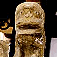
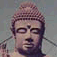

滋賀県
＃113 佐和山遊園
造りまくれ〜！オノレのその脳内世界を！
＃112 びわこ大仏
意外な過去を持つ新人大仏
 ＃205 萬福寺
＃205 萬福寺
珍寺虎の穴で出会った素敵なお宅拝見。
 ＃133 化粧地蔵ツアー
＃133 化粧地蔵ツアー
若狭湾近辺にあるハデハデ地蔵大行進！！
 ＃130 法輪寺
＃130 法輪寺
達磨、だるま、ダルマだらけ・・・
観音様の胎内は骨太でした・・・

仏像が歩くよ！踊るよ！
 ＃276 家原寺/大阪府
＃276 家原寺/大阪府
現代社会でもっとも切実な願い事（かもしれない）合格祈願の寺！
＃253 水掛不動尊
大阪のど真ん中にある熱帯雨林不動！
 ＃174 辯天宗冥応寺
＃174 辯天宗冥応寺
子供こどもコドモだらけの供養塔・・・
山の中に展開する仏像ワンダーランド！

コレはお寺なのか？不思議な山門を潜るとそこには・・・

超濃密な石像ワールド。かかってこい！
 ＃189 万体地蔵苑
＃189 万体地蔵苑
宇宙の果てまでGO!お地蔵さんピラミッドパワー！
 ＃150 常念寺/兵庫県
＃150 常念寺/兵庫県

あまりにも凄いところにあるセルフ弁財天！
 ＃149 成福院
＃149 成福院
ビルマ仏が並ぶ堂内にあるのは「地獄」「極楽」「戦争」「平和」。
＃148 高野山奥の院(1) (2)
真言密教の聖地！でもそこにあるのは変な墓地。
 ＃086 白浜金閣寺
＃086 白浜金閣寺
珍寺大道場 HOME